自分の強みを知りたい方へ
ストレングス
ファインダー
KNOW YOUR STRENGTHS
「診断を受けたけれど、そのままになっている」。資質の名前を覚えるだけでなく、自分の言葉で読み解くところへ。34資質の入門ページと、一人ひとりの「取扱説明書」をつくるセッションをしています。
ストレングス入門を見る セッションと「取扱説明書」について →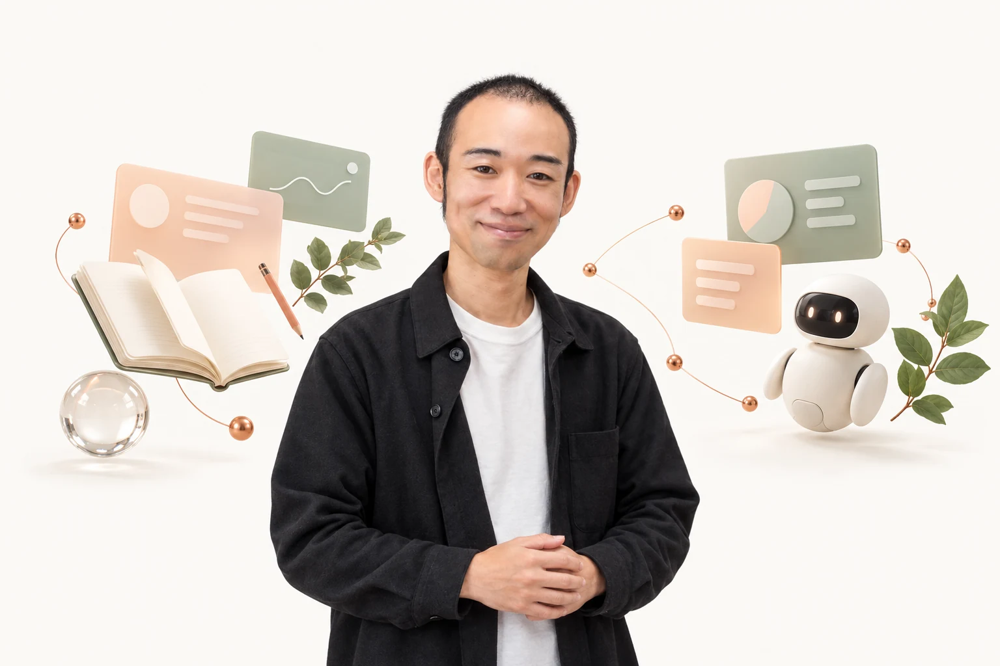
THREE THINGS I DO
強みを読み解くこと。
介護・医療の現場にAIを入れること。
動く絵をつくること。
自分の強みを知りたい方へ
KNOW YOUR STRENGTHS
「診断を受けたけれど、そのままになっている」。資質の名前を覚えるだけでなく、自分の言葉で読み解くところへ。34資質の入門ページと、一人ひとりの「取扱説明書」をつくるセッションをしています。
ストレングス入門を見る セッションと「取扱説明書」について →介護・医療・福祉の事業者の方へ
AI AT WORK
記録、申し送り、研修資料。介護・障害福祉の現場に16年いた経験から、毎日の仕事を聞きながら、明日から使える形まで一緒に考えます。医療法人の健康管理部門で、全6回の職場研修を2026年9月から進めています。
AI現場伴走室を見る 申し送りから記録の下書きをつくる試作（合言葉付き）→お店・教室の告知や、動画をつくりたい方へ
MOTION GRAPHICS
ふだんの言葉を1行書くと、Claude Code にそのまま貼れる動画の注文書になるアプリ「モーションレシピ」。同じやり方でつくった動画を、お手本としてたくさん並べています。
モーションレシピを開く 新しい作品を見る ↓MOTION GRAPHICS
ほぼ毎日、Claude Code で1本ずつ。まずは代表作を6本。その下に、新しい作品が毎日入れ替わります。サムネを押すと、その場で再生します。Motion graphics made with Claude Code, almost every day.
代表作 / Selected
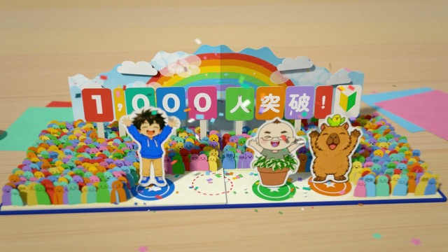
紙の絵本がひらいて、仲間3人がピョコピョコ跳ねて案内する65秒。
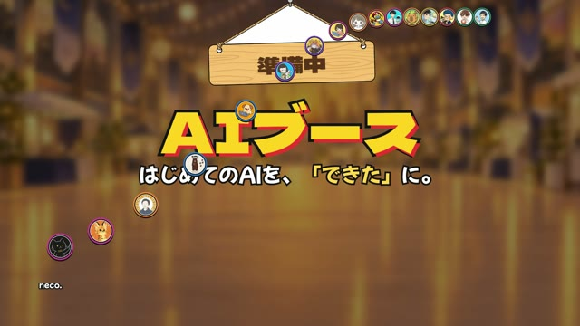
16人が影でにおわせてから、ひとりずつ必殺技つきで「参戦!!」していく94秒。
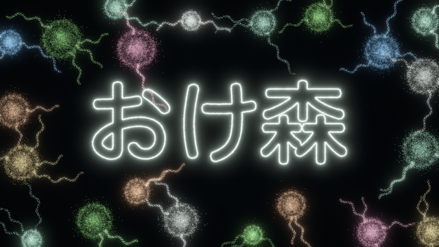
光の粒が自分で集まって、「おけ森」の文字になる。
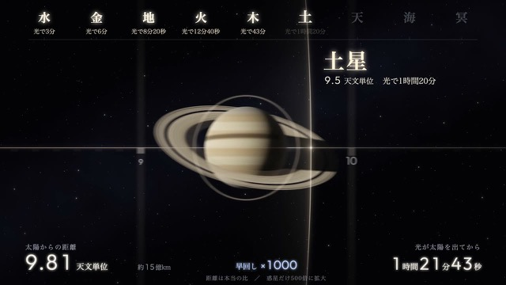
水星から冥王星まで、光で何分かかるかを待ち時間で体感する。
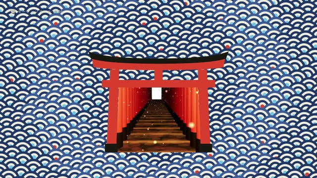
1文の頼み文だけでつくった、和柄と鳥居のショーリール。
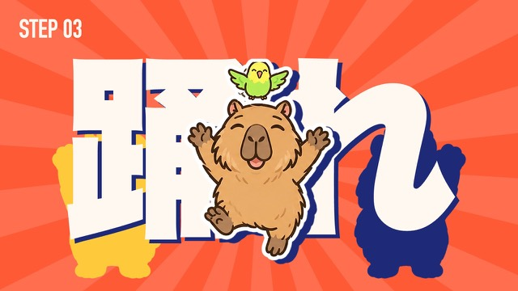
架空のダンス大会の告知。カピバラが「踊れ」の文字と一緒に飛び出す。
新着 / Latest
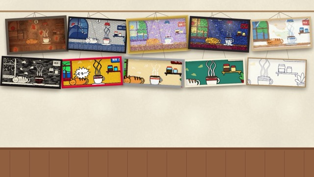
画風リレー（Tea across the ages）をお手本に
One café morning in 10 art styles: the same window, cat and cup redrawn every beat from cave painting to line art, then all ten hang on the wall as frames.
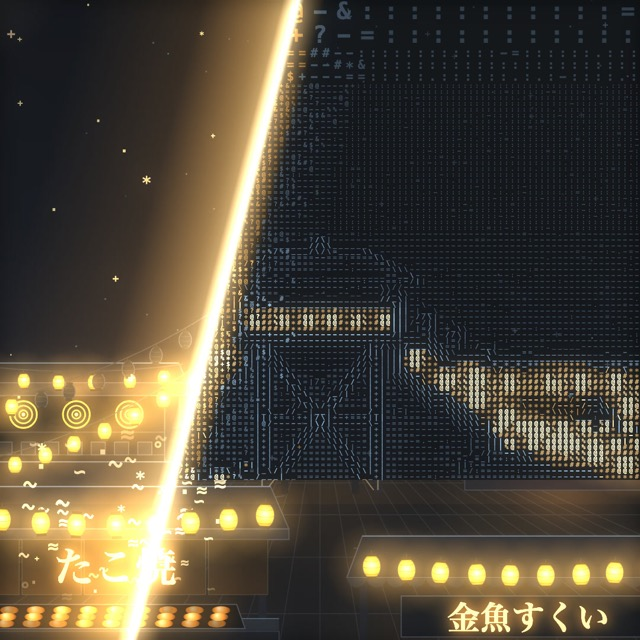
ISO-GLOW（光だけが灯る模型）をお手本に
Night-market announcement: a street drawn only in ASCII characters, lit back into real lanterns each time an amber beam sweeps through, ending on the date.
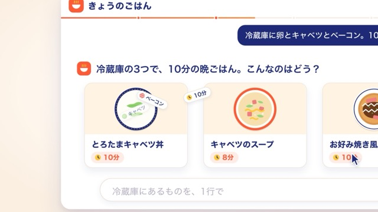
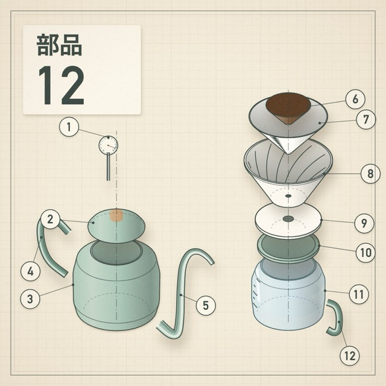
エスプレッソ機の分解図をお手本に
A single line draws a pour-over kit, then explodes it into 12 numbered parts.
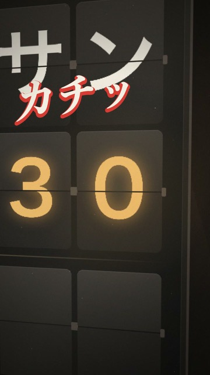
煮干ラーメンのCMをお手本に
A split-flap bakery board: names and times flip in, the last digit clicks home.
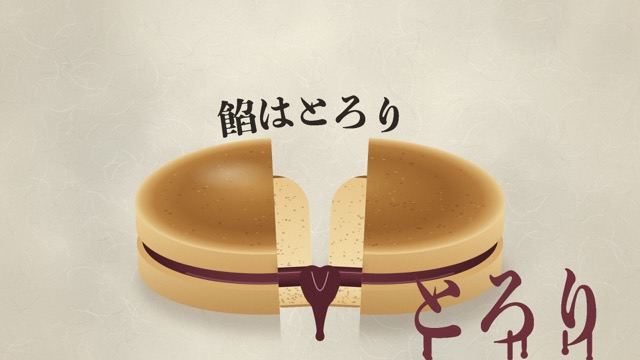
煮干ラーメンのCMをお手本に
A 30-second ad built only from a sweet shop's website: one ink circle keeps becoming the next thing, and words melt into the next line mid-motion.
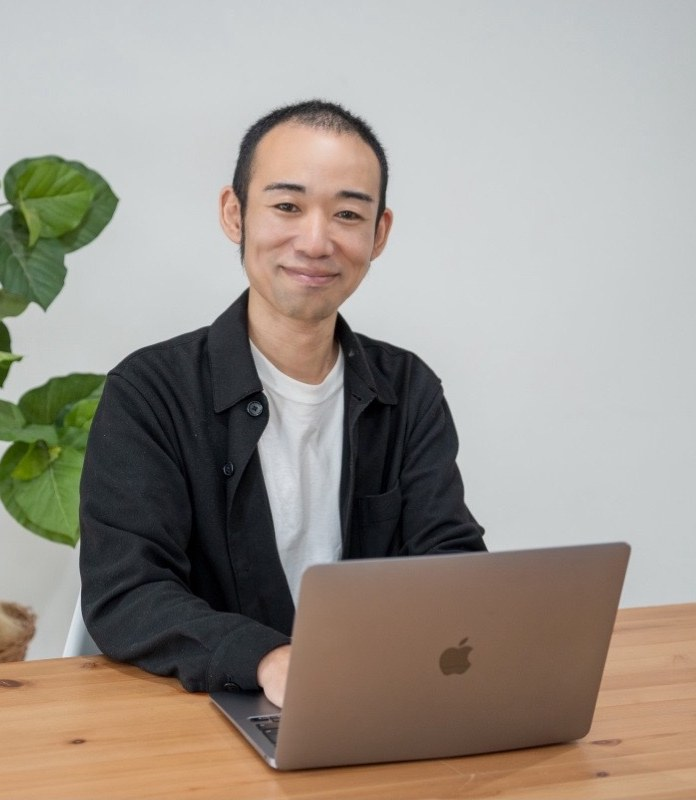
HELLO, I'M OKEMON
はじめまして。介護・障害福祉の現場に16年いた、おけもんです。介護職員、サービス管理責任者、施設長として働いてきました。
夜勤明けの記録も、管理者として抱える悩みも。その現場を知っているからこそ、使う人の言葉で、一緒に考えたいと思っています。
いまは強みの読み解きと、介護・医療の職場のAI導入、モーショングラフィックづくりを仕事にしています。このホームページも、AIと一緒に試しながらつくっています。
COMPANY
一人で始めた小さな事業です。
ご相談や取材のときの手がかりにどうぞ。
ENGLISH SUMMARY
Okemon Company (trade name: Watashi Torisetsu) is a sole proprietorship founded in 2024 in Kobe, Japan, by Okemon (Kenjiro Mimata), who worked for 16 years in elder care and disability services as a care worker, service manager and facility director.
What we do:
LET'S TALK
「何も決まっていない」でも大丈夫。
自分の強みのことでも、職場のAIのことでも、
動画のことでも。
いま気になっていることを、聞かせてください。
オンラインで30分〜1時間。相談は無料です。